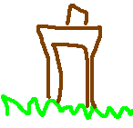
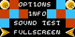
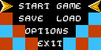
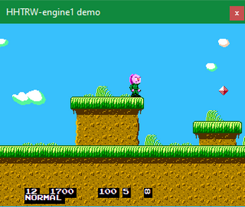
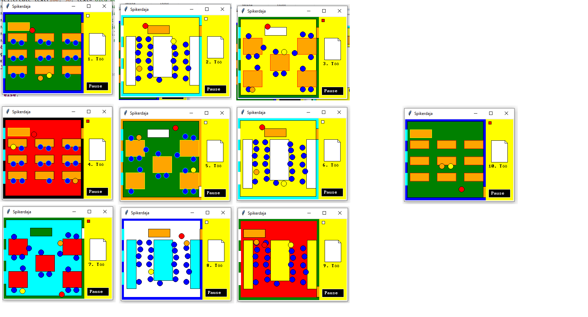
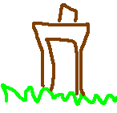
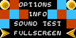
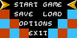
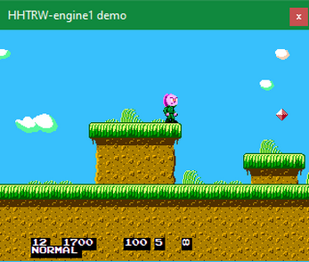
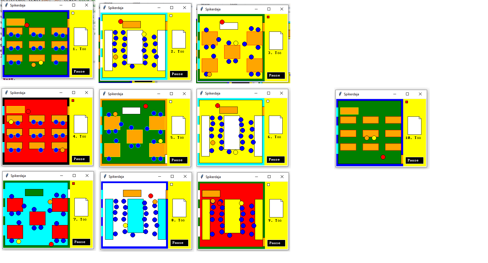

Jüri Vaitmaa (estlib)
Kunstnik
Kes ta on?
Jüri Vaitmaa ehk estlib on IT valdkonna õpetaja, mänguarendaja ja kunstnik, kes on joonistanud pilte oma platformer mängu (HHTRW) ning ka oma kooli ülesannete jaoks.
Kuidas ta kunstini jõudis
Usun, et ta jõudis kunstini juba põhikooli koolipoisina. Ta ilmselt joonistas tegelasi ja muid enda hobidega seotud asju ning arendas aastatega oma oskusi.
Kaua ta kunstiga tegelenud on?
Usun, et Jüri on tegelenud kunstiga vähemalt 20 aastat, teades, et ta alustas sellega mingil määral juba põhikoolis.
Mis stiilis tema kunst on?
Tema töid ei saa ühe stiili alla kategoriseerida aga teame, et paljud tema tööd on mängukonsooli mängude poolt inspireeritud pixel art.
Näited tema töödest
 









Mida mina temast arvan?
Suht nice kunstnik on.
Ta küpsised on ka üsna head.